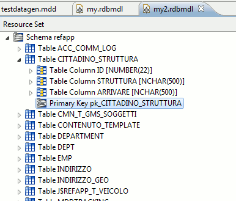

E' diponibile un wizard per ottenere il modello rdbmdl a partire dai metadati di uno schema Oracle. Il wizard si collega via jdbc ad un database e ne estrae i metadati, producendo il modello che descrive lo schema delle tabelle.
Poichè il wizard ha la necessità di collegarsi con un DBMS per estrarre i metadati, è necessario configurare la posizione del jar che contiene i driver jdbc da utilizzare.
Per fare ciò è necessario configurare una variabile di sistema nel file eclipse.ini all'interno della directory di installazione di eclipse.
In particolare è necessario impostare le seguenti variabili:
datagen.jdbc.oracle.drivers, deve essere impostato con il percorso completo del
jar dei driver oracle, es. : C:/devtools/libraries/jdbc/oracle/ojdbc14-10.2.0.3.0.jardatagen.jdbc.postgresql.drivers, deve essere impostato con il percorso completo del
jar dei driver postgresql, es. : C:/devtools/libraries/jdbc/postgresql/postgresql-9.0-801.jdbc3.jar-startup plugins/org.eclipse.equinox.launcher_1.1.0.v20100507.jar --launcher.library plugins/org.eclipse.equinox.launcher.win32.win32.x86_1.1.0.v20100503 -product org.eclipse.epp.package.modeling.product --launcher.defaultAction openFile --launcher.XXMaxPermSize 256M -showsplash org.eclipse.platform --launcher.XXMaxPermSize 256m --launcher.defaultAction openFile -vmargs -Ddatagen.jdbc.postgres.drivers=C:/devtools/libraries/jdbc/postgres/postgresql-9.0-801.jdbc3.jar -Ddatagen.jdbc.oracle.drivers=C:/devtools/libraries/jdbc/oracle/ojdbc14-10.2.0.3.0.jar -Dosgi.requiredJavaVersion=1.5 -Xms40m -Xmx512m
Il wizard viene attivato tramite il menu File -> new -> other... -> Datagen Wizards
-> RDB Schema Reverse Engineering.
All'avvio del wizard è necessario:
.rdbmdl).Al termine dell'esecuzione del wizard sarà disponibile alla posizione indicata un modello che contiene le strutture DB del database selezionato.
In caso di problemi comparirà un messaggio di errore nella parte superiore della schermata. Se l'errore riguarda problemi di reperimento delle classi del driver jdbc, è necessario verificare le impostazioni descritte in precedenza.
